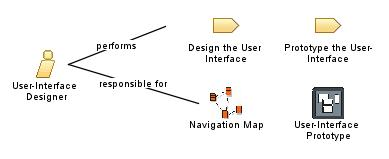

| Role: User-Interface Designer |
|
 |
| This role coordinates the design of the user interface. This includes gathering usability requirements and prototyping candidate user-interface designs to meet those requirements. |
| Role Sets: Developers |
|
Relationships
 |
| Modifies |
|
| Process Usage |
|
Main Description
|
The user-interface designer role is not responsible for implementing the user interface. Instead, this role focuses on
the design and the "visual shaping" of the user interface, by:
-
capturing requirements on the user interface, including usability requirements
-
building user-interface prototypes
-
involving other stakeholders of the user interface, such as users, in usability reviews and use testing sessions
-
reviewing and providing the appropriate feedback on the final implementation of the user interface, as created by
other developers; that is, designers and implementers.
|
Staffing
| Skills |
The User-Interface Designer may come from a creative and visual arts background instead of a business, engineering or
computer science background. The User-Interface Designer focuses on the usability of the system.
|
| Assignment Approaches |
Especially in larger projects, a separate group of people is often formed in which everyone plays the user-interface
designer role. This group focuses primarily on the user interface and the usability aspects of the system. This is
important because of the following:
-
the skills required by a user-interface designer often need to be improved and optimized for the current project
and application type, with potentially unique usability requirements, and this requires both time and focus
-
the risk of "mixed allegiances" must be delimited; that is, the user-interface designer needs to be influenced more
by usability considerations than implementation considerations
|
More Information
© Copyright IBM Corp. 1987, 2006. All Rights Reserved.
|
|